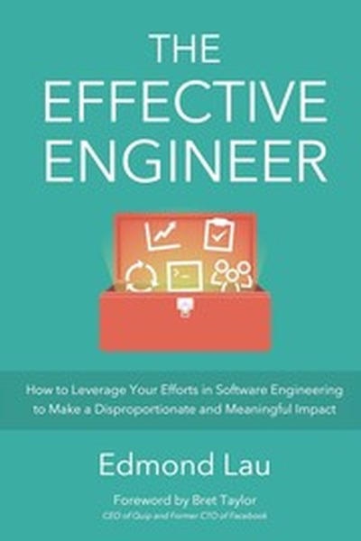

The Effective Engineer
How to maximize the impact of every hour of technical effort.
READ FULL BREAKDOWN (FREE) →The Big Idea
High leverage is the single defining habit of engineers and builders who produce 10x output.
Key Lessons
Focus on High Leverage Activities
Spending forty hours on low-impact bugs produces less value than spending four hours on a core scaling bottleneck.
Optimize for Iteration Speed
The faster you can test and deploy code, the faster your product learns what customers want.
Automate Repetitive Workflows
Manual server maintenance or repetitive data scraping eats cognitive bandwidth that belongs on product innovation.
Measure What Matters
Without clear performance metrics, you cannot know whether your optimization actually improved anything.
Master Your Tools
Knowing keyboard shortcuts, debugging tools, and shell commands speeds up daily work dramatically.
Validate Early and Often
Never spend three months building complex features without customer validation.
Invest in Team Knowledge
Documenting architecture and mentoring peers multiplies your individual contribution across the whole team.
The Graveyard Proves It
Where this advice breaks: Where this advice breaks: excessive meta-optimization of tools can become a form of procrastination from raw shipping.
Read the autopsy: palm-webos →